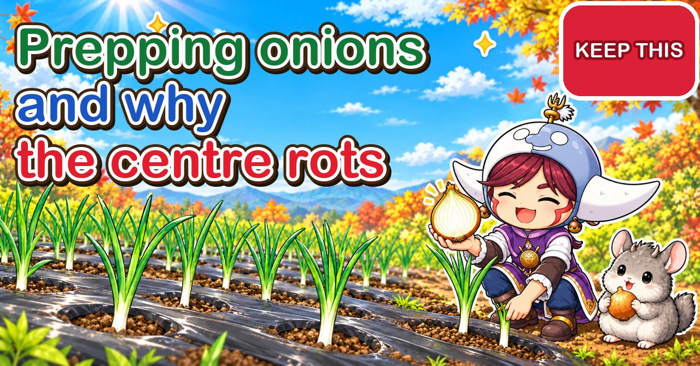

Onion bed prep and rotting centres 🧅 Bacteria get in through the leaves, and rot one layer from the neck down

🧅 "When and how should I get the bed ready for onions?"
🧅 "At harvest, some onions were rotten in the middle. Why?"
🧅 "The outside looked perfect. I only found out when I cut it."
Hello, I'm Eiko. Eight years of growing vegetables organically and without pesticides, and a teaching licence in science.
I wrote this to answer two questions from a reader: "When and how should I prepare to plant onions?" and "Why do some onions come out rotten in the centre at harvest?" They look like separate topics, but they're linked — half of whether your onions resist rotting is decided by how you prepare before planting.
The whole crop — choosing plants, planting depth, overwintering, harvesting and hanging — is in Growing onions. Here I go deep on just two things: preparing before planting, and why the inside rots.
If you're about to plant, read the quick guide and the preparation steps first. If you've already planted this year, or lost onions to rot last year, you can start from how the centre rots. Either way works.
Where you garden: this article follows the autumn-planted crop of central Japan (planted in November, around the first frosts; harvested late May–June). Autumn planting suits mild winters — roughly USDA zones 7 and warmer. In colder areas (zone 6 and below), most growers plant sets or transplants in early spring instead. The three prep sessions work the same either way: just count them back from your own planting day. Shift the spring dates in this article to when your bulbs are swelling fast.
Basics: the onion family (with Welsh onions, garlic, rakkyo and chives) — leave 1–2 years before onions or any of that family go back in the same spot. Spacing 6 in (15 cm), one plant per hole in perforated mulch.
① Quick guide: the numbers for preparing and preventing rot

What this diagram says （図解の文字）
- Count back from planting day
- "3 weeks before: choose the site, add compost" → "2 weeks before: test, then lime" → "1 week before: fertiliser, raised soil, mulch" → "Planting: 15 cm (6 in) apart"
- "Prepare in three sessions": "sun" ／ "drainage" ／ "avoid ground after the onion family"
Working back from planting day
- 3 weeks before: choose the site / clear the last crop's roots / dig in compost
- 2 weeks before: test soil acidity / if it's acidic, dolomitic lime at about 3 oz per square yard (100 g/m²)
- 1 week before: base fertiliser / raise the bed 4–6 in (10–15 cm) — higher if drainage is poor / lay perforated mulch
- Planting day: plant so the white part is buried about ½ in (1–1.5 cm)
Base fertiliser (per square yard / m²)
- Composted cow manure: about 3 quarts (3 L)
- Chicken manure: about 7 fl oz (200 ml)
- Oilseed cake: about 3½ fl oz (100 ml)
That's more than for leafy greens, but for onions that sit in the ground over half a year, it's about right.
When to stop feeding
- Organic fertiliser: by the end of January (central Japan)
- Synthetic fertiliser: by early March (central Japan)
Feed after these points and the bulbs not only fail to swell — they rot more easily in storage (the reason comes later). In short: no fertiliser acting once spring growth takes off.
When rot gets in
- Infection is most likely from when the leaves are at their fullest until they start to fall over
- For autumn-planted onions in central Japan, that's roughly April–May — when the bulbs swell fastest
- Symptoms show from harvest time into storage
② Why prepare in three sessions?
I understand the urge to do it all in one day. But each of the three sessions has a reason.
- Lime and fertiliser together lose nitrogen. Mixed at the same time, nitrogen in the fertiliser escapes more easily as gas. Lime first, let it settle into the soil, then fertilise — nothing wasted.
- Manure and oilseed cake give off gas and heat as microbes break them down. Fresh roots touching that are damaged, so leave about a week between fertilising and planting.
- The site is the one thing you can't change later. Find out after laying mulch that "this is where puddles form" and it's too late. So it comes first.
Put the other way: understand those three reasons and the exact days can shift a little. If you can only get to the plot at weekends, just spread it over three weekends.
③ The steps, in order
Step 1: fix planting day (four weeks ahead)
- Onion plants appear in shops from late October into November in Japan. If your shop takes orders, ordering ahead is reassuring.
- Write one planting day on the calendar. For main-season storing types in central Japan, a mid-to-late-November weekend.
- Count back three, two and one week and write "site and compost", "acidity and lime", "fertiliser, bed, mulch".
Do that and your planning is almost finished.
Step 2: choose the site and add compost (3 weeks before)
- Sun. Onions photosynthesise through the winter, so what matters is whether the spot gets winter sun.
- Avoid spots where puddles linger after rain. Onions in constant damp get damaged roots and bulbs, and the rot-causing organisms multiply.
- Avoid anywhere the onion family grew in the last 1–2 years (Welsh onions, garlic, rakkyo, onions, Chinese chives). Organisms that rot bulbs stay in the soil. Research from Hokkaido's agricultural experiment station also identifies soil as an important source of the disease that rots the inner scales.
- Clear the last crop's roots, stems and dead leaves. Take diseased plant remains off the plot rather than burying them.
- Dig in compost and work the soil well to about 8–12 in (20–30 cm).
Step 3: test acidity, lime if needed (2 weeks before)
- Test the soil's acidity. A probe-type pH meter or a kit where you mix soil with water and read the colour is enough.
- Onions dislike acid soil. If it's on the acid side, scatter dolomitic lime at about 3 oz per square yard (100 g/m²).
- Mix it well into the soil — left on the surface it does nothing.
- If the acidity is fine, don't lime.
Lime out of habit every year and the soil can drift alkaline without you noticing — and then the plants struggle to take up iron, manganese and the like. With lime, the rule is test first.
Step 4: fertiliser, bed and mulch (1 week before)
- Scatter the base fertiliser from the quick guide (cow manure, chicken manure, oilseed cake) over the bed area and mix it in well.
- Raise the bed 4–6 in (10–15 cm). On clay, or where water lingers after rain, about 8 in (20 cm) is safer.
- Rake the surface level. Hollows collect water.
- Lay perforated mulch (holes 6 in / 15 cm apart). Laying it when the soil is slightly moist locks that moisture in; if it's bone dry, water first.
- Cover the mulch edges with soil so wind can't lift it.
Besides cutting weeds, mulch stops winter frost heave lifting the plants. And since the hole spacing is your plant spacing, there's no measuring.
Step 5: plant (planting day)
- Plant so the white part of the seedling is buried about ½ in (1–1.5 cm).
- Press round the base with your fingers so roots and soil make contact.
- Water well after planting. After that, water only if there's no rain for a while.
Three fallbacks when prep runs late
- You bought plants before the bed was ready: heel them in at the edge of the plot with just the white part buried. They'll wait without harm.
- No time to lime: if the test says acidity is fine, skip it. If it's too acidic, it's safer to delay planting a little and lime first.
- You want to plant straight after fertilising: cut back the chicken manure and oilseed cake and rely mainly on well-rotted compost. Keep fertiliser from touching the roots.
What you'll need
- 3 weeks before: spade or hoe, composted cow manure, a bag for cleared material
- 2 weeks before: pH meter or test kit, dolomitic lime (only if acidic), scales (to weigh 100 g; a measuring jug will do)
- 1 week before: chicken manure, oilseed cake, a rake, perforated mulch (holes 6 in / 15 cm apart), pins or soil to hold it down
- Planting day: onion plants, one disposable chopstick (to compare seedling thickness and make planting holes), a watering can
④ How the centre rots: bacteria enter the leaves and rot one layer from the neck

What this diagram says （図解の文字）
- Bacteria get in through the leaves
- The ways in: "onion thrips feeding marks" ／ "disease spots" ／ "wounds from wind or handling"
- "You can't tell from outside"
- "The one layer joined to that leaf rots from the neck"
Now the second question: why do some onions come out rotten in the centre?
The outer skin is clean and it feels normal in your hand. But cut it and one inner layer, or a few, is brown and mushy. The main cause of this is bacteria.
Each layer of an onion is a separate leaf
- The bulb is made of leaf bases swollen with stored food
- Each layer you see when you cut it top to bottom is joined to one leaf
- The flat bit at the bottom (the base plate) is the real stem; the roots grow from it
So an onion is many leaf bases stacked from the outside in.
Bacteria enter a wound and travel down that leaf
A wound, an insect feeding mark or a disease spot on a leaf becomes a way in for bacteria. Once in, they travel down inside that leaf, through the neck, and into the layer of the bulb joined to it.
Hokkaido's agricultural experiment station has studied how the disease that rots inner scales progresses. First, water-soaked spots appear near the base of a leaf and that leaf dies. Then the scale joined to the dead leaf rots from the neck towards the base, turning yellowish-brown to brown.
Because it's a layer separate from the outer skin, you almost never see it from outside. Research in Shiga Prefecture likewise notes that inner-scale rot can't be spotted from outside, making it hard to sort out between harvest and shipping.
The bacteria got in long before harvest
You notice the rot at harvest or in storage — but infection happened earlier.
- Research from NARO, Japan's national agricultural research organisation (Tohoku), says the main bacteria behind post-harvest bulb rot infect while the crop is growing, with symptoms appearing from harvest into storage
- The Hokkaido study found susceptibility rises once the leaves are fullest, peaks just before and as they start to fall over, and drops once leaves begin to die back
- Rainy weather during the infection period is given as a condition for bad years
Hokkaido grows onions planted in spring and harvested in summer, so the months differ. For autumn-planted onions in central Japan, the danger period is April–May, when the bulbs swell fast.
⑤ Three ways in
Way in 1: onion thrips feeding marks
Onion thrips are slender insects about 1/25–1/12 in (1–2 mm) long. They suck sap from the leaves, leaving rows of scratchy white flecks.
Shimane Prefecture's agricultural technology centre compared the number of onion thrips in fields with the share of bulbs that rotted after harvest (checked 60 days after harvest):
- A field with about 1,000 thrips on the leaves at the peak: 70.9% rotten
- Two fields with fewer than 200: 23.5% and 20.0%
- The next year, a field sprayed with insecticide: 10.0%
- That same year, a field with about 500: 68.8%
In the field with lots of thrips, roughly 70% of the harvest rotted. Shimane, which hadn't paid much attention to this insect on onions, has since built thrips control into its growing schedule.
Thrips multiply as it warms up, so on spring rounds, look for more of those white flecks on the leaves.
Way in 2: spots from downy mildew and other diseases
Spots from other leaf diseases also let bacteria in. The biggest effect comes from downy mildew, which spreads in long spells of spring rain.
Saga Prefecture's agricultural research centre compared storage rot in areas with little and lots of downy mildew:
- 2021: little downy mildew 0.8% → lots 16.8%
- 2023: little downy mildew 3.0% → lots 48.0%
The same report notes that bigger bulbs usually rot more in storage — but with lots of downy mildew, even modest-sized bulbs rot easily.
Way in 3: wounds from wind, hail and handling
Shimane's plant protection office says the bacteria behind onion bacterial rots infect mainly through wounds and spots from other diseases. Its advice:
- Watch after strong winds or hail
- Don't damage the onions when weeding or working among them
- Pull diseased plants early and take them off the plot
- To prevent storage rot, harvest on a fine day without bruising
A bent or split leaf lets bacteria in. When weeding or feeding between plants, move the leaves aside with your hand and work gently.
⑥ Over-feeding makes rot more likely
Apart from the ways in, over-feeding makes the bulb itself more prone to rot.
- Shiga Prefecture: late-season varieties rot more in storage when the third feed is late
- JA (Okayama): a last feed after mid-March leads to bulb rot; too much feeding encourages fusarium basal rot and soft rot
- Nagasaki Prefecture: lots of nitrogen makes bulbs too big and, together with harvest bruising, lowers storage life
- Saga Prefecture: in general, bigger bulbs rot more in storage
Wanting "one more feed in spring to make them bigger" is natural. But an onion sends the last of its food into the bulb as its leaves finish their job and die back. A late feed delays that switch, giving leaves that stay green and a neck that stays thick. Stop feeding by the end of January for organic fertiliser, early March for synthetic (central Japan).
⑦ Telling rots apart (symptom → cause → what to do)

What this diagram says （図解の文字）
- Cut it to tell
- "One layer from the neck" — "bacteria entering through the leaves"
- "From the base" — "fungi entering from the soil"
- "A hard rod through the middle" — "bolting; eat it soon"
- "A photo lets you check your answer next year" ／ "How it rots tells you the likely cause"
When you find a rotten bulb, cut it top to bottom before you throw it out and take a photo of the cut face. Where the rot starts points to the cause — and the photo is something to check against when deciding next year's measures.
One inner layer (or a few) brown and mushy from the neck
- Likely cause: bacteria that entered through a leaf wound, insect feeding mark or disease spot while growing
- What to do: sort the rest of that harvest by how soft the neck is. Bulbs whose necks feel squishy when pressed get used first, not hung. Next year, step up spring checks and action against thrips and downy mildew
Rotting from the base (the flat part where roots grow)
- Likely cause: a fungal disease entering from the soil (such as fusarium basal rot)
- What to do: dispose of rotten bulbs off the plot. Next year, change the site and improve drainage. Aichi Prefecture's advice for hanging onions is to dry them quickly somewhere airy
A hard, rod-like core through the middle
- Likely cause: not rot but bolting — the flower stalk runs through the centre
- What to do: it won't keep, so eat it soon. The cause was going into winter with plants that were too big; next year, rethink seedling thickness
Fine at first, then rotting one after another while hanging
- Likely cause: bacteria that got in before harvest showing symptoms in storage; rot spreading from a rotten bulb to its neighbours
- What to do: look up at the hanging bulbs now and then and remove soft or smelly ones. Use bulbs from a bad downy-mildew year soon rather than storing them
Rotting from the base of the plant with a bad smell, before the leaves fall
- Likely cause: bacterial soft rot, common when spring warms up and rain sets in
- What to do: pull that plant early and take it off the plot. Work without damaging the neighbours' leaves
⑧ Common prep problems (symptom → cause → what to do)
Several plants wilt and flop within 1–2 weeks of planting
- Likely cause: planted straight after fertilising, so gas from the breaking-down fertiliser damaged roots; or planted too shallow or too deep
- Worth knowing: however carefully you plant, a few onions flop in the first week or so. A handful down isn't failure
- What to do: fill gaps with spares you heeled in. Next year, leave a week between fertilising and planting
Plants lifted in winter, roots showing
- Likely cause: frost heave lifted them with the soil — most common without mulch
- What to do: press them back into the soil with your fingers when you see it; with roots in the air they die. Next year, lay mulch
Water stays round the bed long after rain
- Likely cause: the bed is too low / clay soil that water won't soak into / the edge of the plot is low and collects water
- What to do: dig a shallow trench in the path round the bed to let water away. Next year, raise the bed to about 8 in (20 cm). Go into spring like this and rot diseases are more likely
All leaf, neck still thick in May
- Likely cause: fed too late or too much; too much nitrogen acting
- What to do: this year's bulbs won't store, so use them soon rather than hanging them. Next year, stop feeding on time
Seedling leaf tips yellowing, plants not growing
- Likely cause: acid soil / poor drainage weakening roots / winter cold damaging leaf tips
- What to do: test acidity first. Leaf tips dying back a little in winter cold is common and nothing to worry about if new leaves come in spring. If all the leaves look like dying, cover with fleece to soften the cold
⑨ Varieties, rot and storage
Onions fall into two broad groups by how fast they mature. Which you plant changes both harvest time and how you store them.
Very early and early types
- Planting: early-to-mid November in central Japan (a little before main-season types)
- Harvest: late March–May
- Storage: they don't keep long — eat them soon
- To avoid rot: don't hang them for long. Pull them with leaves on and eat them as fresh onions
Main-season and late types
- Planting: by the end of November in central Japan
- Harvest: late May–June
- Storage: hung up, they keep a long time
- To avoid rot: late types rot more in storage if feeding runs late. Harvest is close to the rainy season, so pick a run of fine days
Choosing what to plant
- Plant early types for eating straight away and main-season or late types for storing, and you'll have onions from spring through summer
- The more you plan to store, the more the checklist below matters
- The plant label says which type it is. If not, ask at the shop
⑩ A pesticide-free checklist against rot

What this diagram says （図解の文字）
- Five things that stop them rotting
- "Plant high, somewhere well drained" ／ "Keep to the feeding deadline" ／ "Check the leaves in April–May" ／ "Don't damage the leaves" ／ "Harvest on a fine day"
- "No ways in, less rot"
I grow without pesticides, so I protect the crop by giving bacteria no way in and no chance to build up. Here's what I check, season by season (months for central Japan).
Before planting (October–November)
- Chose a sunny, well-drained site
- Chose a spot where the onion family hasn't grown for 1–2 years
- Took the last crop's remains — especially diseased plants — off the plot
- Raised the bed on the high side
- Kept base fertiliser to the quick-guide amounts (not over)
Winter (December–March)
- Stopped feeding by the deadline (organic end of January, synthetic early March)
- Pressed back any plants lifted by frost heave
Spring (April–May)
- Looked at the leaves at least once a week for white flecks (thrips) and disease spots
- Pulled odd-looking plants early and took them off the plot
- Weeded gently, moving leaves aside by hand
- Checked extra carefully after strong winds or hail
Harvest and storage (May–June)
- Harvested after two or three fine days in a row
- Handled them gently — no throwing or dropping
- Set aside bulbs with soft necks or wounds and used them first
- Hung them in an airy, shady place
If you do use pesticides, choose products approved for onion thrips or downy mildew on onions, and follow the label.
⑪ Where advice differs
Lime every year? Some advice says to scatter dolomitic lime before every planting; other advice says test and lime only if acidic. Onions certainly dislike acid soil, but liming every year can push soil alkaline. Test first and you avoid both problems.
Don't worry about thrips on onions? One view: autumn-planted onions are harvested before thrips explode in summer, so yields don't suffer much. But trials show that lots of thrips sharply increase rot in storage. Even Shimane, which once didn't prioritise thrips on onions, added control once the link with rot was clear. Judge it by storage, not by bulb size, and it's an insect worth caring about.
Feed until when? One guide says end of January for organic and early March for synthetic; a growing region's advice says a last feed after mid-March leads to rot. Both mean the same thing: don't have fertiliser acting once you're into spring. Organic fertiliser takes longer to start working, so stop it sooner.
⑫ Questions people ask
How many weeks ahead should I start? Three weeks before planting is comfortable: site and compost at three weeks, acidity and lime at two, fertiliser, bed and mulch at one. Even if you're short of time, keep one rule — a week between base fertiliser and planting.
Can I plant again where onions rotted in the centre last year? Move them if you can. Soil is considered an important source of the organisms that rot the inside. Choose a spot without the onion family for 1–2 years, raise the bed and improve drainage.
Can you tell from outside whether the centre is rotten? Hardly ever, because a layer separate from the skin rots. The neck is the clue: press it lightly, and use bulbs with a squishy neck or juice seeping from it first rather than hanging them.
If I cut out the rotten part, can I eat the rest? If only a small part is rotten and the rest has no discolouration or smell, cut out the rotten layer and a generous margin around it. If it's widely discoloured or smells bad, don't risk it — throw it away.
Can I grow them next to my purple-podded peas? The reader who asked was planting a purple-podded pea at the same time. Peas are a different family from onions, so they're fine in the same plot. Peas that grow too big before winter get damaged by cold, so don't sow too early — let them go through winter small.
Can I plant the day after rain? While the soil is sticky, wait a day or two. The right moisture is when a handful squeezed in your fist crumbles when you press it with a finger. Treading or pressing wet soil compacts it, drains badly, and makes a plot where rot diseases thrive.
What compost should I use? Well-rotted cow manure compost is easy: choose one that's crumbly with almost no smell. If you're using raw compost that still smells strongly, put it in more than three weeks before planting so it settles into the soil.
Can I bury rotten onions in the plot? Please don't. Rotten bulbs and diseased plants are full of the organisms; buried, they become the source of infection for the next crop. Bag them and take them off the plot.
Do container onions rot too? Yes. Containers hold water easily, so check there are drainage holes and no water sitting in the saucer. Water only once the surface has dried.
Science bit: why only one layer rots 🔬
In the same bulb, some layers rot and some don't. Strange, when you think about it.
The layers aren't connected to each other. From outside an onion looks like one lump, but each layer is a separate leaf. Each leaf has fine vessels carrying water and food, running from the leaf tip through the neck down to that leaf's base.
Bacteria travel down inside that one leaf. So the first layer to rot is the one joined to the leaf where they got in. The other layers belong to other leaves and aren't drawn in straight away. Given time, rot spreads outwards from the rotten layer.
Why "from the neck"? The bacteria enter through a leaf wound, so their way into the bulb is the neck. As the Hokkaido study found, rot moves from the neck towards the base — which is why browning near the neck end is the signature of this disease when you cut it.
If instead it's rotting from the base, the organism probably came from the soil, in through the roots. The direction of the rot tells you where it got in.
Try it with children:
- Cut an onion in half from top to bottom
- Pinch the layer about three in from the outside
- Follow it upwards (towards the neck) and you'll see it leads into what was a green leaf
- Follow it down and it ends at the flat base plate
Once it clicks that "this one layer used to be one leaf", why only one layer rots makes perfect sense. For a summer science project, count the layers and compare with the number of leaves the plant had.
To sum up
- ✅ Prepare in three sessions counted back from planting day: site and compost at three weeks, acidity and lime at two, fertiliser, bed and mulch at one
- ✅ Choose the site for sun, drainage, and no onion family for 1–2 years
- ✅ The centre rots because bacteria enter a damaged leaf and rot the inner layer joined to it, from the neck down. You can't see it from outside
- ✅ The ways in: thrips feeding marks, downy mildew and other spots, wounds from wind or handling. Be most careful while bulbs swell fast (April–May in central Japan)
- ✅ Stop feeding on time. Harvest on a fine day, without bruising
Onions take more than half a year from planting to harvest, so finding the inside rotten when you finally cut one is really disappointing. But once you know how the rot works, what to do becomes clear. Start by writing your planting day on the calendar, and "choose the site" three weeks before it 🧅
Thank you for reading!